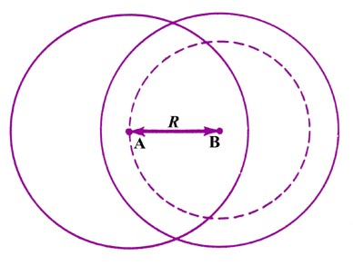
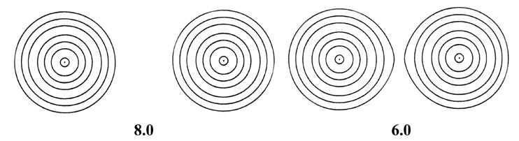
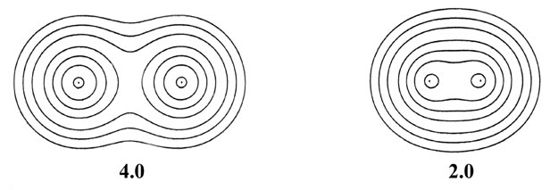
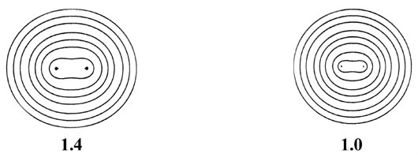

An Introduction to the Electronic Structure of Atoms
and Molecules
Dr. Richard F.W. Bader
Professor of Chemistry / McMaster University / Hamilton,
Ontario
|
An Electrostatic Interpretation of the Chemical Bond
In the light of the above discussion of a molecular electron density
distribution, we may regard a molecule as two or more nuclei imbedded in
a rigid three-dimensional distribution of negative charge. There is a theorem
of quantum mechanics which allows us to make direct use of this picture
of a molecule. This theorem states that the force acting on a nucleus in
a molecule may be determined by the methods of classical electrostatics.
The nuclei in a molecule repel one another, since they are of like charge.
This force of repulsion, if unbalanced, would push the nuclei apart and
the molecule would separate into atoms. In a stable molecule, however,
the nuclear force of repulsion is balanced by an attractive force exerted
by the negatively-charged electron density distribution. The usefulness
of this approach lies in the fact that we may account for and discuss the
stability of molecules in terms of the classical concept of a balance between
the electrostatic forces of attraction and repulsion. We can illustrate
this method and arrive at some results of a general nature by considering
in detail the forces acting on the nuclei in the hydrogen molecule.
The charge on a hydrogen nucleus is +e and the force
of repulsion acting on either nucleus is
where R is the internuclear distance. This force obviously acts
to push the two nuclei apart (Fig. 6-3).
Fig. 6-3. The forces acting on the nuclei
in H2. Only one outer
contour of the electron density distribution is shown. Over 99% of the
total electronic charge is contained within this contour.
The attractive force which balances this force of repulsion
and draws the nuclei together is exerted by the negatively-charged electron
density distribution. The density distribution is treated as a rigid
distribution of negative charge in space. Each small element of this charge
distribution exerts a force on the nuclei, illustrated in Fig.
6-3 for one such small charge point. The forces it exerts on the nuclei
are labelled FeA and FeB. The total
amount of negative charge in the electron density distribution must correspond
to some integral number of electrons. However, the amount of negative charge
in each small region of space will in general correspond to some fraction
of one electronic charge.
The electronic force of attraction FeA or FeB
may be equated to two components, one along the bond, and one perpendicular
to it. The density distribution is symmetric with respect to the internuclear
axis, i.e., for every charge point above the axis there must, by symmetry,
be another point of equal charge at the corresponding place beneath the
internuclear axis. The symmetrically related charge point will exert the
same force along the bond, but the component perpendicular to the bond
will be in the opposite direction. Thus the perpendicular forces of attraction
exerted on the nuclei are zero (Fig. 6-4) and we
may confine our attention to the components of the attractive force along
the bond.
Fig. 6-4. The two components of force along
the bond add together while the two perpendicular components cancel at
both A and B.
It is obvious that all of the charge elements which are
in the general region between the two nuclei will exert forces which draw
the two nuclei together. The force exerted by the density in this region
acts in opposition to the force of nuclear repulsion and binds the two
nuclei together. It is also clear that a charge element in the region behind
either nucleus will exert a force which tends to increase the distance
between the nuclei (Fig. 6-5).
Fig. 6-5. The component of FeA
along
the bond is greater than the corresponding component of FeB.
Since the charge element is closer to nucleus A than it is to nucleus
B, the component of the force on A along the bond will be greater than
the component of the force on B along the bond. Thus the effect of density
in this region will be to separate the molecule into atoms.
There must also be a line on which the density exerts the
same force on both nuclei and thus neither increases nor decreases R
because the charge density in one region draws the nuclei together and
in another draws them apart. The charge element shown in Fig.
6-6 exerts the same force along the bond on both A and B even though
it is closer to B than it is to A. Although the total force FeB
is much larger than FeA, FeB
is directed almost perpendicular to the bond axis and thus its component
along the bond is quite small and equal to the component of FeA
along the bond. Charge density on either of the two curves shown in Fig.
6-6 exerts equal forces on both of the nuclei along the bond, and such
charge density will not tend to increase or decrease the distance between
the nuclei. Thus these two curves (surfaces in three dimensions)
divide the space in a molecule into a binding region and an antibinding
region. Any charge density between the two boundary curves, in the binding
region, draws the two nuclei together while any charge density
in the hatched region behind either curve, the antibinding region,
exerts unequal forces on the nuclei and separates the molecule into atoms.

Fig. 6-6. The boundary curves which separate the
binding from the antibinding regions in a homonuclear diatomic molecule.
A chemical bond is thus the result of the accumulation
of negative charge density in the region between the nuclei to an extent
sufficient to balance the nuclear forces of repulsion. This corresponds
to a state of electrostatic equilibrium as the net force acting on each
nucleus is zero for this one particular value of the internuclear distance.
If the distance between the nuclei is increased from the equilibrium value,
the nuclear force of repulsion is decreased. At the same time the force
of attraction exerted by the electron density distribution is increased
as the binding region is increased in size. Thus when R is increased
from its equilibrium value there are net forces of attraction acting on
the nuclei which pull the two nuclei together again. A definite force would
have to be applied to overcome the force of attraction exerted by the electron
density distribution and separate the molecule into atoms. Similarly, if
the value of R is decreased from its equilibrium value,
the force of nuclear repulsion is increased over its equilibrium value.
At the same time, the attractive force exerted by the electron density
is decreased, because the binding region is decreased in size. In this
case there will be a net force of repulsion pushing the two nuclei apart
and back to their equilibrium separation. There is thus one value of R
for which the forces on the nuclei are zero and the whole molecule is in
a state of electrostatic equilibrium.
The division of the space around a molecule
into a binding and an antibinding region shows where charge density must
be concentrated in order to obtain a stable chemical bond. The next question
which must be answered is, "How much charge must
be placed in the binding region to
achieve electrostatic equilibrium?" For example, we might consider the
possibility of forming a molecule by bringing together two atoms, each
with its own atomic distribution of charge, and simply allow the two atomic
charge distributions to overlap without deforming in any way. This would
result in the accumulation of approximately twice as much charge density
in the binding region as in either of the antibinding regions behind the
nuclei. Would this doubling of the charge density in the region between
the nuclei be sufficient to balance the nuclear forces of repulsion? Let
us answer this question for the simple case of two hydrogen atoms forming
molecular hydrogen, but again the result will be general.
The most stable state of the hydrogen molecule is
obtained when two hydrogen atoms, each in its most stable atomic state,
approach one another. The ground state of a hydrogen atom is obtained when
the electron is in the 1s orbital. The density distribution around
each hydrogren nucleus is the spherical one which we discussed previously
in some detail. We shall first calculate the force on one of the hydrogen
nuclei resulting when the two atoms are very far apart. The situation is
represented in Fig. 6-7 where each atomic charge
distribution is represented by a single outer circular contour. This contour
is to define a sphere which in three-dimensions contains essentially all
of the electronic charge of each atom.
Fig. 6-7. The forces acting on nucleus A at a
large internucleus distances, R.
Consider the forces exerted on nucleus A. The force of
nuclear repulsion is just
The atomic charge density centred on nucleus A exerts no net force on
this nucleus as it pulls equally in every direction because of its spherical
symmetry. There is, however, a net force of attraction due to the single
electronic charge dispersed in the atomic distribution of B. A theorem
of classical electrostatics states that the force exerted by a spherical
charge distribution on a point charge lying outside of the charge distribution
is equal to the force which would be obtained if all the charge in
the distribution were concentrated at its centre. Nucleus A is a point
charge which lies outside of the spherical charge distribution centred
on B. Thus the force exerted on nucleus A by this charge distribution
is just
as the total amount of charge contained in the distribution is that
of one electron. The total force acting on nucleus A is
A zero force is the expected answer when the two atoms are very
far apart.
Can we again balance the forces for a value of R
which is of the order of magnitude of an atomic diameter, i.e., typical
of the values of R found in molecules? At this value of R,
each nucleus will have penetrated the charge density surrounding the other
nucleus. Recall that in this calculation we insist upon the atomic charge
densities remaining spherical and our molecular charge density is obtained
by allowing the two rigid atomic charge distributions to overlap one another
(Fig.
6-8).
|  |
Fig. 6-8. The forces exterted on the nucleus A
for the overlap of rigid atomic charge distributions. Only the charge density
on B which is contained in the sphere of radius R exerted a force
on nucleus A. |
The force of nuclear repulsion in this case is still given by
where the value of R is much less than in the previous calculation.
Since the charge distribution on A is still spherical in shape, it exerts
no net force on nucleus A. The force exerted on nucleus A by the charge
density on B can again be calculated by the theorem referred to previously.
However, nucleus A no longer lies outside of all the charge density on
B. The value of R is significantly less than the radius of the charge
distribution on B. All the charge density on B which lies within the sphere
defined by the bond length R again exerts a force on nucleus A,
equal to that obtained if all this density were situated at the B nucleus.
The theorem referred to previously shows that the density on B which lies
outside of this sphere defined by R exerts no net force on nucleus A.
Since R is less than the diameter of the charge
distribution, the amount of negative charge contained in a sphere of radius
R
will be less than that of one electron. The observed value of
R
for the hydrogen molecule is 1.4 au and reference to the data given previously
for the 1s orbital density for the hydrogen atom shows that a sphere
of radius 1.4 would contain approximately one half of an electronic charge.
The electrostatic force of attraction exerted on nucleus A is, therefore,
The net force on nucleus A is
There is a net force of repulsion exerted on nucleus A under these conditions.
If
R were decreased still further, nucleus A would penetrate the
charge density around B to an even greater extent and "see" even more of
the nuclear charge on B. The force on the nuclei will thus be repulsive
for all finite values of R.
This is an important result as it shows that the density
distribution in a molecule cannot be considered as the simple sum of the
two atomic charge densities. The overlap of rigid atomic densities does
not place sufficient charge density in the binding region to overcome the
nuclear force of repulsion. We conclude that the original atomic
charge distributions must be distorted in the formation of a molecule,
and the distortion is such that charge density is concentrated in the binding
region between the nuclei. A quantum mechanical calculation predicts this
very result. The calculation shows that there is a continuous distortion
of the original atomic density distributions, a distortion which increases
as the internuclear distance decreases. This is illustrated in Fig.
6-9 for the approach of two hydrogen atoms to form the hydrogen molecule.



Fig. 6-9. A series of electron density contour
maps illustrating the changes in the electron charge distribution during
the approach of two H atoms to form H2. The internuclear distance
R
in units of au is indicated beneath each map. At R = 8 the atomic
densities appear to be undistorted. At R = 6 the densities are distorted
but still essentially separate. As R is further decreased, charge
density contours of increasing value envelope both nuclei, and charge density
is accumulated at the positions of the nuclei and in the internuclear region.
The values of the contours in au increase from the outermost to the innermost
one in the order 2 ´ 10-n,
4 ´ 10-n, 8 ´
10-n, for decreasing values of n beginning with
n
= 3. Thus the outermost contour in each case is 0.002 au and the value
of the innermost contour for R = 1.0 au, for example, is 0.4.
The changes in the original atomic density distributions
caused by the formation of the chemical bond may be isolated and studied
directly by the construction of a density difference distribution.
Such a distribution is obtained by subtracting the density obtained from
the overlap of the undistorted atomic densities separated by a distance
R,
from the molecular charge distribution evaluated at the same value of R.
Wherever this density difference is positive in value it means that the
electron density in the molecule is greater than that obtained from the
simple overlap of the original atomic densities. Where the density difference
is negative, it means that there is less density at this point in space
in the molecule than in the distribution obtained from the overlap of the
original atomic distributions. Such a density difference map thus provides
a
detailed picture of the net reorganization of the charge density of the
separated atoms accompanying the formation of a molecule.
We have just proven that the density distribution resulting
from the overlap of the undistorted atomic densities does not place sufficient
charge density in the binding region to balance the forces of nuclear repulsion.
The
regions of charge increase in the density difference maps are, therefore,
the regions to which charge is transferred relative to the separated atoms
to obtain a state of electrostatic equilibrium and hence a chemical bond.
From this point of view a density difference map provides us with a picture
of the "bond density."
Figure 6-10 shows a set of density
difference or bond density maps for the approach of two hydrogen atoms
to form the hydrogen molecule. At very large separations, for example at
8 au, the density distribution on each atom is polarized in the direction
of the approaching atom. Charge density has been transferred from the antibinding
region behind each nucleus to the binding region immediately in front of
each nucleus. Thus even at large separations the atomic density distributions
are no longer spherical. We noted in our discussion of the approach of
two rigid hydrogen atoms that a spherical charge distribution does not
exert a net force on the nucleus on which it is centred. Each polarized
atomic charge distribution does, however, exert an attractive force on
its nucleus. The polarized densities place more charge on the binding side
of each nucleus than on the antibinding side. These long-range attractive
forces, called van der Waals' or dispersion forces, could be aptly described
as a "bootstrap effect" as each nucleus is pulled by its own charge density.
All pairs of neutral molecules undergo this type of polarization as a result
of the long-range interactions between them, and there are attractive forces
operative between all pairs of molecules out to very large distances. Although
the long-range polarizations and the resulting forces of attraction are
very weak, they are of extreme importance. They are commonly referred to
as van der Waals forces and are solely responsible for the binding observed
in certain kinds of solids, solid helium for example. This will be discussed
more fully later.


Fig. 6-10. Density difference distribution
(molecular minus atomic) for the approach of two H atoms. These maps indicate
the changes in the atomic densities caused by the formation of a molecule.
The solid contours represent an increase in charge density over the atomic
case, while the dashed contours denote a decrease in the charge density
relative to the atomic densities. Since the changes in the charge density
are much smaller for large values of R than for small values of
R
two different scales are used. The solid and dashed contours increase (+)
or decrease (-) respectively from the zero contour in the order ±2
´
10-n,
±4 ´ 10-n, ±8
´
10-n au for decreasing values of n. The maps for
R
= 8.0, 6.0 and 4.0 au begin with
n = 5 and those for
R =
2.0, 1.4 and 1.0 au begin with n
= 3. The zero contour and the value
of the innermost positive contour are indicated in each case. Note the
continuous increase in charge density in the region between the nuclei
as R is decreased.
At 6.0 au the density increase in the binding
region is common to both nuclei, and for distances less than 6.0 au the
system can no longer be described as two polarized hydrogen atoms. The
distortions of the original densities caused by the transfer of charge
to the binding region is so great that the individual character of the
atomic densities is no longer discernible. The magnitude of the
attractive force (which is negative in sign) exerted on the nuclei by this
accumulation of charge density in the binding region increases rapidly
for distances less than 4.5 au (Fig. 6-11).
|
Fig. 6-11. The force on an H nucleus in H2
as a function of the internuclear separation. An attractive force is negative
in sign; a replusive one, positive. |
The attractive force reaches a maximum at 2.1 au. The density difference
diagrams indicate that for distances as small as 2.0 au, the density increase
is confined to the region between the nuclei. For separations smaller than
2.0 au an increasing amount of charge density is transferred to the anti-binding
regions behind each nucleus. Because of this, the attractive force on the
nuclei decreases rapidly with a further decrease in R until at R
= 1.4 au, the net attractive force exerted by the charge density just balances
the force of nuclear repulsion (Fig. 6-11). A state
of electrostatic equilibrium is reached, and a chemical bond is formed.
A further decrease in R leads to a force of repulsion. More charge
density is transferred to the antibinding regions, and the force exerted
by this charge density, acting in concert with the increase in the force
of nuclear repulsion, outweighs the attractive force exerted by the charge
density in the binding region.
The same changes in density are depicted in Fig.
6-12, which is a series of profiles along the internuclear axis of
the density difference maps shown in Fig. 6-10.
The profile maps illustrate in a striking fashion the build-up of charge
density in the region between the nuclei.
|
Fig. 6-12. Profiles of the density difference
along the internuclear axis for H2at
a series of internuclear separations. One nucleus is held fixed, and the
other is moved relative to it. The separations are indicated on the diagram. |
The formation of any chemical bond is qualitatively similar
to the changes in the charge distribution and in the forces exerted on
the nuclei as found for the hydrogen molecule. We must now inquire into
the conditions which determine whether or not sufficient charge density
can be accumulated in the binding region to yield a stable molecule. Since
not all atoms form chemical bonds, clearly such conditions must exist.